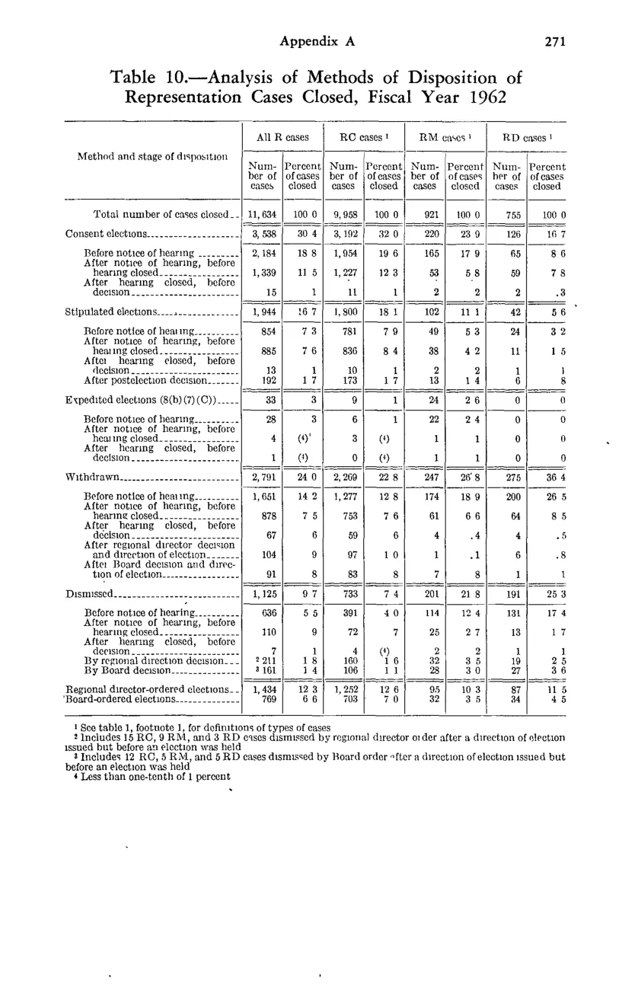

NLRB Stats Archive › Annual Reports › FY1962 › Disposition of representation cases closed — by method and stage
| Method and stage of disposition | All R cases — Number of cases closed | All R cases — Percent of cases closed | RC cases — Number of cases closed | RC cases — Percent of cases closed | RM cases — Number of cases closed | RM cases — Percent of cases closed | RD cases — Number of cases closed | RD cases — Percent of cases closed |
|---|---|---|---|---|---|---|---|---|
| Total number of cases closed | 11,634 | 100 | 9,958 | 100 | 921 | 100 | 755 | 100 |
| Consent elections — total | 3,538 | 30.4 | 3,192 | 32 | 220 | 23.9 | 126 | 16.7 |
| Consent — Before notice of hearing | 2,184 | 18.8 | 1,954 | 19.6 | 165 | 17.9 | 65 | 8.6 |
| Consent — After notice of hearing, before hearing closed | 1,339 | 11.5 | 1,227 | 12.3 | 53 | 5.8 | 59 | 7.8 |
| Consent — After hearing closed, before decision | 15 | 0.1 | 11 | 0.1 | 2 | 0.2 | 2 | 0.3 |
| Stipulated elections — total | 1,944 | 16.7 | 1,800 | 18.1 | 102 | 11.1 | 42 | 5.6 |
| Stipulated — Before notice of hearing | 854 | 7.3 | 781 | 7.9 | 49 | 5.3 | 24 | 3.2 |
| Stipulated — After notice of hearing, before hearing closed | 885 | 7.6 | 836 | 8.4 | 38 | 4.2 | 11 | 1.5 |
| Stipulated — After hearing closed, before decision | 13 | 0.1 | 10 | 0.1 | 2 | 0.2 | 1 | 0.1 |
| Stipulated — After postelection decision | 192 | 1.7 | 173 | 1.7 | 13 | 1.4 | 6 | 0.8 |
| Expedited elections (8(b)(7)(C)) — total | 33 | 0.3 | 9 | 0.1 | 24 | 2.6 | 0 | 0 |
| Withdrawn — total | 2,791 | 24 | 2,269 | 22.8 | 247 | 26.8 | 275 | 36.4 |
| Dismissed — total | 1,125 | 9.7 | 733 | 7.4 | 201 | 21.8 | 191 | 25.3 |
| Regional director-ordered elections | 1,434 | 12.3 | 1,252 | 12.6 | 95 | 10.3 | 87 | 11.5 |
| Board-ordered elections | 769 | 6.6 | 703 | 7 | 32 | 3.5 | 34 | 4.5 |

Source data: U.S. NLRB Annual Reports (public domain). Reconstruction by NLRB Stats Archive. Verify figures against the source scan. Updated June 2026. · About